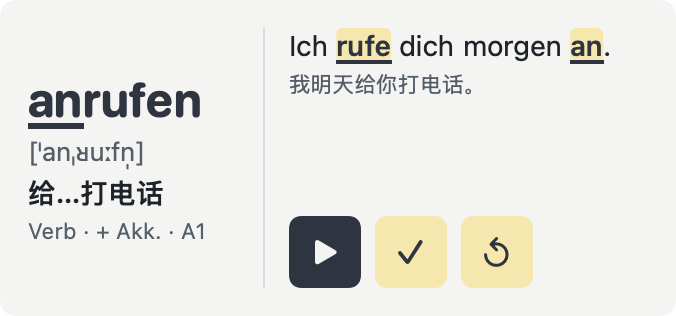

Wort Daily
German · 德语 · iPhone / iPad / Mac / Apple Watch

Use color and articles to distinguish grammatical gender. Words can include IPA, plurals and verb principal parts. Annotated separable verbs highlight both the stem and the detached prefix.
用颜色与冠词区分名词性别；有数据的词显示 IPA、复数与动词三形。带标注的可分动词例句同时突出词干和分离的前缀。
Free app with an optional one-time Pro purchase. 免费下载，可选一次性 Pro 内购。